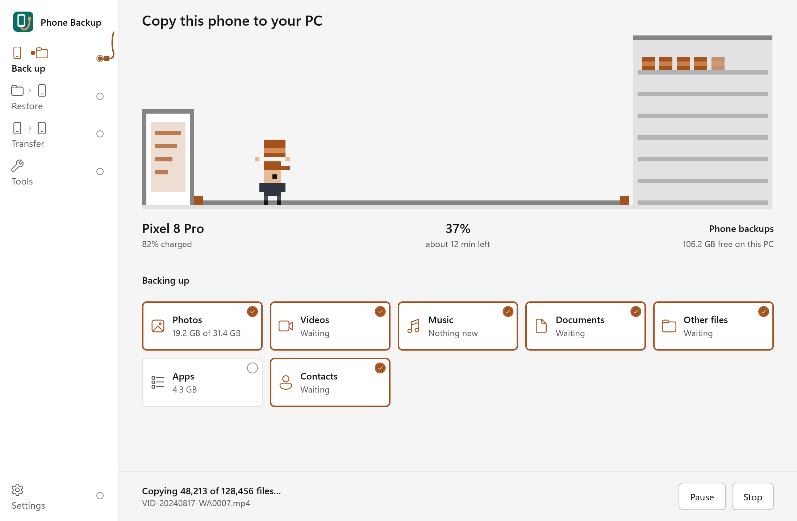

Your Android phone, copied to your PC
A free Windows app that backs up photos, files, apps, contacts and messages over a USB cable or Wi-Fi. No account, no cloud. The backup is an ordinary folder you can open.
Free and open source under the GPL-3.0 license.
- Phone backups
- Pixel 8_37F1one folder per phone
- files
- DCIM
- Download
- appsreinstall later
- data
- contacts.vcf
- call_log.txt
- sms.txt
- report.txtwhat was copied
- checksums.sha256to verify it later
- files
- Pixel 8_37F1one folder per phone

What it saves
Tick what you want. The next backup copies only what is new or changed.
Photos, videos and files
Everything in the phone's storage and SD card, in the same folders as on the phone. Or only some folders and types, with the size of each shown first. Caches and WhatsApp's copies of sent media are left out.
Apps
The apps you installed, ready to put back on a phone. Their logins and data do not come with them.
Contacts, calls, messages and calendar
Picture messages keep their photos. Contacts open in Google Contacts or any phone. Some phones do not allow reading these over USB.
Restore to any phone
Pick a backup and put back all its photos and files or only the ones you choose, or reinstall missing apps. Large files, duplicates and old files are marked, so they are easy to leave out. Files the phone already has are skipped, never replaced. Verify backup checks that no file has changed since it was saved.
Or press Export to get its contacts, calls and messages as spreadsheets and pages you can search, print or save as PDF, the calendar for Google Calendar or Outlook, and its photos sorted into year and month folders.
Phone to phone
Connect both phones and copy one to the other in one go. The new phone can be backed up first, and nothing changes on it until you have seen what will happen.
Tools for your backups
Read your messages, contacts, calls and calendar inside the app. Find duplicate files, turn HEIC photos into JPG, merge duplicate contacts, and free up space by deleting files from the phone once they are safely backed up. If scrcpy is installed, open the phone's screen on your computer.
Nothing leaves your computer
No account, no tracking, no subscription. The app goes online only when you ask it to, and it never sends your data. What the app reads and sends
Ready in a few minutes
Download one file, plug in your phone and press Back up now. The guide shows each step, including Wi-Fi without a cable.